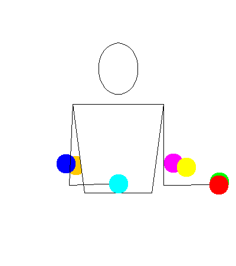

Unfinished Page
This page has not been fully added yet. If you know how to do this trick and would like to submit a tutorial on how to do it, please do. Until then, enjoy this little guy juggling. He worked really hard on that trick.
